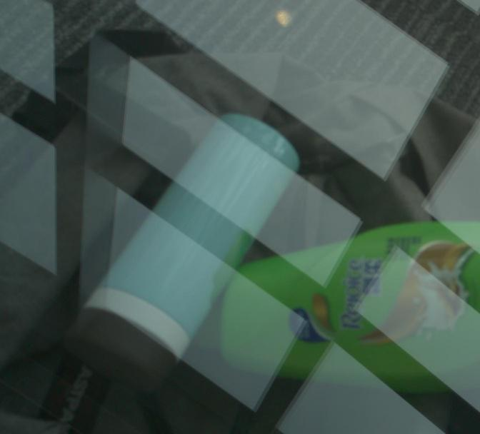
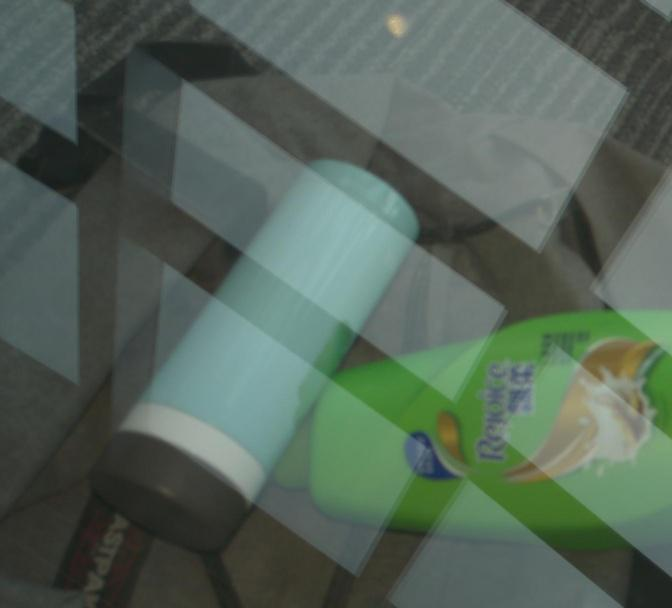

Robust Reflection Removal with Reflection-free Flash-only Cues
CVPR 2021
|  |
 |
|
|
|
| Input ambient image |
Input flash image |
Flash-only image |
Ours |
Ground truth |
Reflection-free Flash-only Cues (RFC).
What is flash-only?
Flash-only image = Flash image - Ambient image on linear space.
The flash-only image is equivalent to an image captured in a completely dark environment. However, it is not directly captured in the dark. Instead, it is obtained by subtracting the ambient image from the corresponding flash image in raw data space.
Why is it reflection-free?
Objects in reflection barely illuminated and reflections do not appear in flash-only images.
Why is the reflection-free flash-only cue (RFC) robust?
This cue is robust since it is independent of the appearance and strength of reflection.
The flash-only image can be obtained under arbitrary illumination.
Motivation
- Most existing reflection removal methods impose strict assumptions on reflection (e.g., the reflection is blurry).
- Algorithms might fail when the apperance of real-world reflection is different with the assumption.
- Can we find a cue so that different reflection can be robustly removed?
- Our proposed cue can remove sharp or blurry reflection, weak or strong reflection, reflection with the ghosting cue or not.